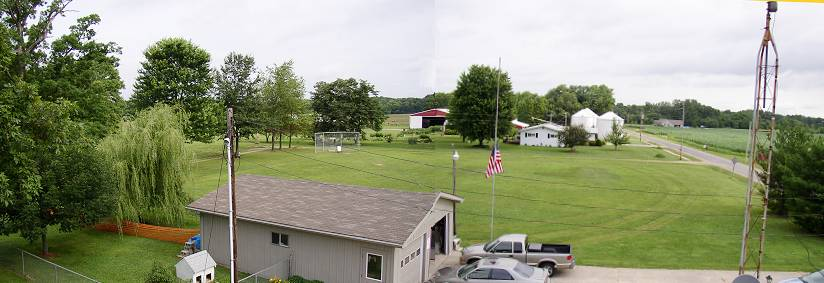
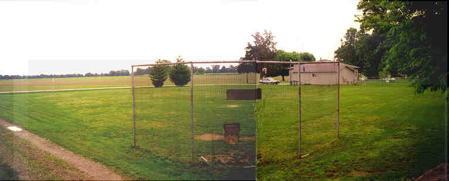
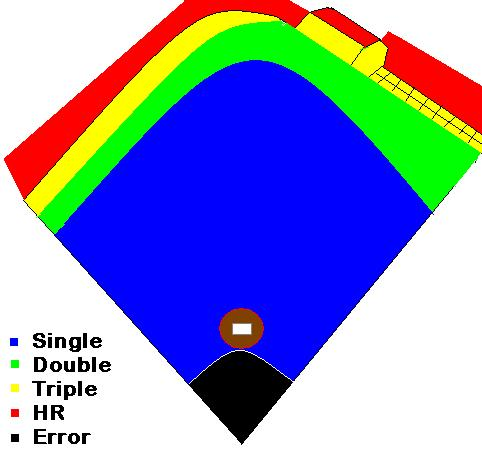

HOMERUN
DIMENSIONS
The dimensions 
are somewhat deceptive
because of the open ground
in left field beyond the
homerun line. In left, there
is almost 30 feet from the line
to the road where there is no
ground in right past the line
due to the garage and the dog's
pen. Because of this, right field is deemed a "short porch" because most homeruns hit out to left must travel to the road if they are not going to be caught.
The distance for a double to left is about 150 feet down the line and 165-170 everywhere else. To right, the distance is 140 feet for a double all the way to the garage. The triple line is exactly 9 feet behind the double line across the field to the garage.
Any ball hitting the face of the garage is deemed a triple. The ball must
hit the roof or clear the garage for a homerun. A temporary fence is
placed in the middle of the dog's pen for the homerun distance. Any ball
landing inside the dog's pen that does not clear the temporary fence is a
triple.
Some other dimensions of interest are listed below:
Distance to the road down the left field line - 183
Distance over the road down left field line - 205
Distance to road in left center field - 198
Distance over road in left center field - 220
Distance to pine trees in center - 198
Distance to driveway straight-away center - 225
Distance over the garage in right center - 192
Distance over dog's pen in right field - 201